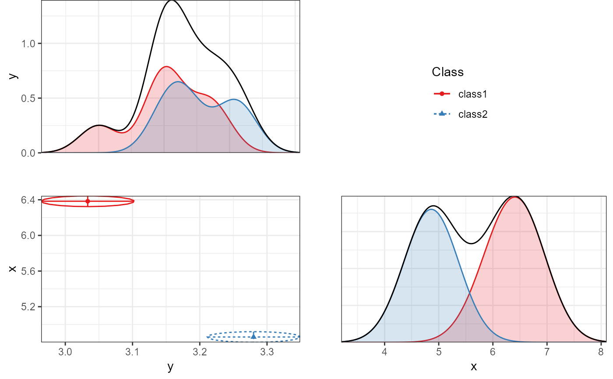

Creates a faceted plot of two-dimensional correlation plots and unidimensional density plots for a single mixture model.
plot_bivariate( x, variables = NULL, sd = TRUE, cors = TRUE, rawdata = TRUE, bw = FALSE, alpha_range = c(0, 0.1), return_list = FALSE )
| x | An object for which a method exists. |
|---|---|
| variables | Which variables to plot. If NULL, plots all variables that are present in the model. |
| sd | Logical. Whether to show the estimated standard deviations as lines emanating from the cluster centroid. |
| cors | Logical. Whether to show the estimated correlation (standardized covariance) as ellipses surrounding the cluster centroid. |
| rawdata | Logical. Whether to plot raw data, weighted by posterior class probability. |
| bw | Logical. Whether to make a black and white plot (for print) or a color plot. Defaults to FALSE, because these density plots are hard to read in black and white. |
| alpha_range | Numeric vector (0-1). Sets the transparency of geom_density and geom_point. |
| return_list | Logical. Whether to return a list of ggplot objects, or just the final plot. Defaults to FALSE. |
An object of class 'ggplot'.
Caspar J. van Lissa
iris_sample <- iris[, c("Sepal.Length", "Sepal.Width")] names(iris_sample) <- c("x", "y") res <- mx_profiles(iris_sample, classes = 2)#> Called from: tidySEM:::mixture_starts(model = new("MxModel", name = "mix2", #> matrices = list(weights = new("FullMatrix", name = "weights", #> values = c(1, 1), labels = c(NA_character_, NA_character_ #> ), free = c(FALSE, TRUE), lbound = c(1e-04, 1e-04), ubound = c(NA_real_, #> NA_real_), .squareBrackets = numeric(0), .persist = TRUE, #> .condenseSlots = FALSE, display = character(0), dependencies = integer(0), #> joinModel = NA_character_, joinKey = NA_character_)), #> algebras = list(), constraints = list(), intervals = list(), #> latentVars = character(0), manifestVars = character(0), data = new("MxDataStatic", #> observed = list(x = c(5.1, 4.9, 4.7, 4.6, 5, 5.4, 4.6, #> 5, 4.4, 4.9, 5.4, 4.8, 4.8, 4.3, 5.8, 5.7, 5.4, 5.1, #> 5.7, 5.1, 5.4, 5.1, 4.6, 5.1, 4.8, 5, 5, 5.2, 5.2, 4.7, #> 4.8, 5.4, 5.2, 5.5, 4.9, 5, 5.5, 4.9, 4.4, 5.1, 5, 4.5, #> 4.4, 5, 5.1, 4.8, 5.1, 4.6, 5.3, 5, 7, 6.4, 6.9, 5.5, #> 6.5, 5.7, 6.3, 4.9, 6.6, 5.2, 5, 5.9, 6, 6.1, 5.6, 6.7, #> 5.6, 5.8, 6.2, 5.6, 5.9, 6.1, 6.3, 6.1, 6.4, 6.6, 6.8, #> 6.7, 6, 5.7, 5.5, 5.5, 5.8, 6, 5.4, 6, 6.7, 6.3, 5.6, #> 5.5, 5.5, 6.1, 5.8, 5, 5.6, 5.7, 5.7, 6.2, 5.1, 5.7, #> 6.3, 5.8, 7.1, 6.3, 6.5, 7.6, 4.9, 7.3, 6.7, 7.2, 6.5, #> 6.4, 6.8, 5.7, 5.8, 6.4, 6.5, 7.7, 7.7, 6, 6.9, 5.6, #> 7.7, 6.3, 6.7, 7.2, 6.2, 6.1, 6.4, 7.2, 7.4, 7.9, 6.4, #> 6.3, 6.1, 7.7, 6.3, 6.4, 6, 6.9, 6.7, 6.9, 5.8, 6.8, #> 6.7, 6.7, 6.3, 6.5, 6.2, 5.9), y = c(3.5, 3, 3.2, 3.1, #> 3.6, 3.9, 3.4, 3.4, 2.9, 3.1, 3.7, 3.4, 3, 3, 4, 4.4, #> 3.9, 3.5, 3.8, 3.8, 3.4, 3.7, 3.6, 3.3, 3.4, 3, 3.4, #> 3.5, 3.4, 3.2, 3.1, 3.4, 4.1, 4.2, 3.1, 3.2, 3.5, 3.6, #> 3, 3.4, 3.5, 2.3, 3.2, 3.5, 3.8, 3, 3.8, 3.2, 3.7, 3.3, #> 3.2, 3.2, 3.1, 2.3, 2.8, 2.8, 3.3, 2.4, 2.9, 2.7, 2, #> 3, 2.2, 2.9, 2.9, 3.1, 3, 2.7, 2.2, 2.5, 3.2, 2.8, 2.5, #> 2.8, 2.9, 3, 2.8, 3, 2.9, 2.6, 2.4, 2.4, 2.7, 2.7, 3, #> 3.4, 3.1, 2.3, 3, 2.5, 2.6, 3, 2.6, 2.3, 2.7, 3, 2.9, #> 2.9, 2.5, 2.8, 3.3, 2.7, 3, 2.9, 3, 3, 2.5, 2.9, 2.5, #> 3.6, 3.2, 2.7, 3, 2.5, 2.8, 3.2, 3, 3.8, 2.6, 2.2, 3.2, #> 2.8, 2.8, 2.7, 3.3, 3.2, 2.8, 3, 2.8, 3, 2.8, 3.8, 2.8, #> 2.8, 2.6, 3, 3.4, 3.1, 3, 3.1, 3.1, 3.1, 2.7, 3.2, 3.3, #> 3, 2.5, 3, 3.4, 3)), means = NA_real_, type = "raw", #> numObs = 150, observedStats = list(), .isSorted = FALSE, #> .needSort = TRUE, .parallel = TRUE, .noExoOptimize = TRUE, #> primaryKey = NA_character_, weight = NA_character_, frequency = NA_character_, #> minVariance = 1.49011611938477e-08, algebra = character(0), #> warnNPDuseWeight = TRUE, exoFree = NULL, naAction = "pass", #> verbose = 0L, name = "data"), submodels = list(class1 = new("MxRAMModel", #> name = "class1", matrices = list(A = new("FullMatrix", #> name = "A", values = c(0, 0, 0, 0), labels = c(NA_character_, #> NA_character_, NA_character_, NA_character_), free = c(FALSE, #> FALSE, FALSE, FALSE), lbound = c(NA_real_, NA_real_, #> NA_real_, NA_real_), ubound = c(NA_real_, NA_real_, #> NA_real_, NA_real_), .squareBrackets = numeric(0), #> .persist = TRUE, .condenseSlots = FALSE, display = character(0), #> dependencies = integer(0), joinModel = NA_character_, #> joinKey = NA_character_), S = new("SymmMatrix", name = "S", #> values = c(0, 0, 0, 0), labels = c("v1", NA, NA, #> "v2"), free = c(TRUE, FALSE, FALSE, TRUE), lbound = c(NA_real_, #> NA_real_, NA_real_, NA_real_), ubound = c(NA_real_, #> NA_real_, NA_real_, NA_real_), .squareBrackets = numeric(0), #> .persist = TRUE, .condenseSlots = FALSE, display = character(0), #> dependencies = integer(0), joinModel = NA_character_, #> joinKey = NA_character_), F = new("FullMatrix", name = "F", #> values = c(1, 0, 0, 1), labels = NA_character_, free = FALSE, #> lbound = NA_real_, ubound = NA_real_, .squareBrackets = numeric(0), #> .persist = TRUE, .condenseSlots = TRUE, display = character(0), #> dependencies = integer(0), joinModel = NA_character_, #> joinKey = NA_character_), M = new("FullMatrix", name = "M", #> values = c(0, 0), labels = c("m11", "m12"), free = c(TRUE, #> TRUE), lbound = c(NA_real_, NA_real_), ubound = c(NA_real_, #> NA_real_), .squareBrackets = numeric(0), .persist = TRUE, #> .condenseSlots = FALSE, display = character(0), dependencies = integer(0), #> joinModel = NA_character_, joinKey = NA_character_)), #> algebras = list(), constraints = list(), intervals = list(), #> latentVars = character(0), manifestVars = c("x", "y"), #> data = NULL, submodels = list(), expectation = new("MxExpectationRAM", #> A = "A", S = "S", F = "F", M = "M", thresholds = NA_character_, #> dims = NA_character_, usePPML = FALSE, ppmlData = NULL, #> UnfilteredExpCov = NA, numStats = numeric(0), between = NULL, #> isProductNode = c(FALSE, FALSE), verbose = 0L, .rampartCycleLimit = NA_integer_, #> .rampartUnitLimit = NA_integer_, .useSufficientSets = TRUE, #> .forceSingleGroup = FALSE, .analyzeDefVars = TRUE, #> .maxDebugGroups = 0L, .optimizeMean = 2L, .useSparse = NA, #> expectedCovariance = NULL, expectedMean = NULL, expectedFullCovariance = NULL, #> expectedFullMean = NULL, threshnames = NA_character_, #> discrete = NA_character_, discreteSpec = NULL, .discreteCheckCount = TRUE, #> selectionPlan = NULL, selectionVector = NA_character_, #> data = NA_integer_, dataColumns = integer(0), dataColumnNames = NULL, #> .runDims = character(0), output = list(), debug = list(), #> name = "expectation"), fitfunction = new("MxFitFunctionML", #> fellner = NA, verbose = 0L, profileOut = character(0), #> rowwiseParallel = NA, jointConditionOn = "auto", #> components = character(0), info = list(), dependencies = integer(0), #> expectation = integer(0), vector = TRUE, rowDiagnostics = FALSE, #> result = numeric(0), name = "fitfunction"), compute = NULL, #> independent = FALSE, options = list(), output = list(), #> runstate = list(), .newobjects = FALSE, .resetdata = FALSE, #> .wasRun = FALSE, .modifiedSinceRun = TRUE, .version = "2.19.6"), #> class2 = new("MxRAMModel", name = "class2", matrices = list( #> A = new("FullMatrix", name = "A", values = c(0, 0, #> 0, 0), labels = c(NA_character_, NA_character_, NA_character_, #> NA_character_), free = c(FALSE, FALSE, FALSE, FALSE #> ), lbound = c(NA_real_, NA_real_, NA_real_, NA_real_ #> ), ubound = c(NA_real_, NA_real_, NA_real_, NA_real_ #> ), .squareBrackets = numeric(0), .persist = TRUE, #> .condenseSlots = FALSE, display = character(0), #> dependencies = integer(0), joinModel = NA_character_, #> joinKey = NA_character_), S = new("SymmMatrix", #> name = "S", values = c(0, 0, 0, 0), labels = c("v1", #> NA, NA, "v2"), free = c(TRUE, FALSE, FALSE, TRUE #> ), lbound = c(NA_real_, NA_real_, NA_real_, NA_real_ #> ), ubound = c(NA_real_, NA_real_, NA_real_, NA_real_ #> ), .squareBrackets = numeric(0), .persist = TRUE, #> .condenseSlots = FALSE, display = character(0), #> dependencies = integer(0), joinModel = NA_character_, #> joinKey = NA_character_), F = new("FullMatrix", #> name = "F", values = c(1, 0, 0, 1), labels = NA_character_, #> free = FALSE, lbound = NA_real_, ubound = NA_real_, #> .squareBrackets = numeric(0), .persist = TRUE, #> .condenseSlots = TRUE, display = character(0), #> dependencies = integer(0), joinModel = NA_character_, #> joinKey = NA_character_), M = new("FullMatrix", #> name = "M", values = c(0, 0), labels = c("m21", #> "m22"), free = c(TRUE, TRUE), lbound = c(NA_real_, #> NA_real_), ubound = c(NA_real_, NA_real_), .squareBrackets = numeric(0), #> .persist = TRUE, .condenseSlots = FALSE, display = character(0), #> dependencies = integer(0), joinModel = NA_character_, #> joinKey = NA_character_)), algebras = list(), #> constraints = list(), intervals = list(), latentVars = character(0), #> manifestVars = c("x", "y"), data = NULL, submodels = list(), #> expectation = new("MxExpectationRAM", A = "A", S = "S", #> F = "F", M = "M", thresholds = NA_character_, #> dims = NA_character_, usePPML = FALSE, ppmlData = NULL, #> UnfilteredExpCov = NA, numStats = numeric(0), #> between = NULL, isProductNode = c(FALSE, FALSE #> ), verbose = 0L, .rampartCycleLimit = NA_integer_, #> .rampartUnitLimit = NA_integer_, .useSufficientSets = TRUE, #> .forceSingleGroup = FALSE, .analyzeDefVars = TRUE, #> .maxDebugGroups = 0L, .optimizeMean = 2L, .useSparse = NA, #> expectedCovariance = NULL, expectedMean = NULL, #> expectedFullCovariance = NULL, expectedFullMean = NULL, #> threshnames = NA_character_, discrete = NA_character_, #> discreteSpec = NULL, .discreteCheckCount = TRUE, #> selectionPlan = NULL, selectionVector = NA_character_, #> data = NA_integer_, dataColumns = integer(0), #> dataColumnNames = NULL, .runDims = character(0), #> output = list(), debug = list(), name = "expectation"), #> fitfunction = new("MxFitFunctionML", fellner = NA, #> verbose = 0L, profileOut = character(0), rowwiseParallel = NA, #> jointConditionOn = "auto", components = character(0), #> info = list(), dependencies = integer(0), expectation = integer(0), #> vector = TRUE, rowDiagnostics = FALSE, result = numeric(0), #> name = "fitfunction"), compute = NULL, independent = FALSE, #> options = list(), output = list(), runstate = list(), #> .newobjects = FALSE, .resetdata = FALSE, .wasRun = FALSE, #> .modifiedSinceRun = TRUE, .version = "2.19.6")), #> expectation = new("MxExpectationMixture", weights = "weights", #> components = c("class1", "class2"), verbose = 0L, scale = "softmax", #> data = NA_integer_, dataColumns = integer(0), dataColumnNames = NULL, #> .runDims = character(0), output = list(), debug = list(), #> name = "expectation"), fitfunction = new("MxFitFunctionML", #> fellner = NA, verbose = 0L, profileOut = character(0), #> rowwiseParallel = NA, jointConditionOn = "auto", components = character(0), #> info = list(), dependencies = integer(0), expectation = integer(0), #> vector = FALSE, rowDiagnostics = FALSE, result = numeric(0), #> name = "fitfunction"), compute = NULL, independent = FALSE, #> options = list(), output = list(), runstate = list(), .newobjects = FALSE, #> .resetdata = FALSE, .wasRun = FALSE, .modifiedSinceRun = TRUE, #> .version = "2.19.6"), classes = 2, data = iris_sample) #> debug at C:/Git_Repositories/tidySEM/R/mx_mixture.R#376: stopifnot(`mxModel is not a mixture model.` = inherits(model@expectation, #> "MxExpectationMixture") | attr(model, "tidySEM") == "mixture") #> debug at C:/Git_Repositories/tidySEM/R/mx_mixture.R#377: stopifnot(`mxModel must contain data to determine starting values.` = !(is.null(model@data) | #> is.null(model@data$observed))) #> debug at C:/Git_Repositories/tidySEM/R/mx_mixture.R#378: classes <- length(model@submodels) #> debug at C:/Git_Repositories/tidySEM/R/mx_mixture.R#379: if (classes < 2) { #> strts <- try({ #> mxAutoStart(model, type = "ULS") #> }) #> if (inherits(strts, "try-error")) { #> strts <- try({ #> mxRun(model) #> }) #> } #> if (inherits(strts, "try-error")) { #> stop("Could not derive suitable starting values for the 1-class model.") #> } #> else { #> return(strts) #> } #> } #> debug at C:/Git_Repositories/tidySEM/R/mx_mixture.R#390: data <- model@data$observed #> debug at C:/Git_Repositories/tidySEM/R/mx_mixture.R#391: if (!hasArg(splits)) { #> splits <- try({ #> kmeans(x = data, centers = classes)$cluster #> }) #> if (inherits(splits, "try-error")) { #> message("Could not initialize clusters using K-means.") #> splits <- try({ #> cutree(hclust(dist(data)), k = classes) #> }) #> if (inherits(splits, "try-error")) { #> stop("Could not initialize clusters using hierarchical clustering. Consider using a different clustering method, or imputing missing data.") #> } #> } #> } else { #> stopifnot(`Number of unique values in splits must be identical to the number of latent classes.` = length(unique(splits) == #> names(model@submodels))) #> } #> debug at C:/Git_Repositories/tidySEM/R/mx_mixture.R#392: splits <- try({ #> kmeans(x = data, centers = classes)$cluster #> }) #> debug at C:/Git_Repositories/tidySEM/R/mx_mixture.R#392: kmeans(x = data, centers = classes)$cluster #> debug at C:/Git_Repositories/tidySEM/R/mx_mixture.R#393: if (inherits(splits, "try-error")) { #> message("Could not initialize clusters using K-means.") #> splits <- try({ #> cutree(hclust(dist(data)), k = classes) #> }) #> if (inherits(splits, "try-error")) { #> stop("Could not initialize clusters using hierarchical clustering. Consider using a different clustering method, or imputing missing data.") #> } #> } #> debug at C:/Git_Repositories/tidySEM/R/mx_mixture.R#404: tab_split <- table(splits) #> debug at C:/Git_Repositories/tidySEM/R/mx_mixture.R#405: if (any(tab_split) < 2) { #> small_cats <- which(tab_split < 2) #> choose_from <- which(tab_split > 2 + length(small_cats)) #> if (length(choose_from) == 0) #> stop("Some clusters were too small to determine sensible starting values in `mixture_starts()`. Either specify splits manually, or reduce the number of classes.") #> splits[sample(which(splits %in% choose_from), length(small_cats))] <- small_cats #> } #> debug at C:/Git_Repositories/tidySEM/R/mx_mixture.R#406: small_cats <- which(tab_split < 2) #> debug at C:/Git_Repositories/tidySEM/R/mx_mixture.R#407: choose_from <- which(tab_split > 2 + length(small_cats)) #> debug at C:/Git_Repositories/tidySEM/R/mx_mixture.R#408: if (length(choose_from) == 0) stop("Some clusters were too small to determine sensible starting values in `mixture_starts()`. Either specify splits manually, or reduce the number of classes.") #> debug at C:/Git_Repositories/tidySEM/R/mx_mixture.R#409: splits[sample(which(splits %in% choose_from), length(small_cats))] <- small_cats #> debug at C:/Git_Repositories/tidySEM/R/mx_mixture.R#412: if (!classes == length(unique(splits))) { #> stop("Argument 'splits' does not identify a number of groups equal to 'classes'.") #> } #> debug at C:/Git_Repositories/tidySEM/R/mx_mixture.R#415: if (!all(unique(splits) %in% 1:classes)) { #> splits <- as.integer(as.factor(splits)) #> } #> debug at C:/Git_Repositories/tidySEM/R/mx_mixture.R#419: strts <- lapply(1:classes, function(i) { #> thissub <- names(model@submodels)[i] #> mxModel(model[[thissub]], mxData(data[splits == i, , drop = FALSE], #> type = "raw"), mxFitFunctionML()) #> }) #> debug at C:/Git_Repositories/tidySEM/R/mx_mixture.R#425: strts <- do.call(mxModel, c(list(model = "mg_starts", mxFitFunctionMultigroup(names(model@submodels)), #> strts))) #> debug at C:/Git_Repositories/tidySEM/R/mx_mixture.R#426: strts <- try({ #> strts <- mxAutoStart(strts, type = "ULS") #> mxRun(strts, silent = TRUE, suppressWarnings = TRUE) #> }) #> debug at C:/Git_Repositories/tidySEM/R/mx_mixture.R#427: strts <- mxAutoStart(strts, type = "ULS") #> debug at C:/Git_Repositories/tidySEM/R/mx_mixture.R#428: mxRun(strts, silent = TRUE, suppressWarnings = TRUE) #> debug at C:/Git_Repositories/tidySEM/R/mx_mixture.R#430: if (inherits(strts, "try-error")) { #> strts <- try({ #> strts <- mxAutoStart(strts, type = "DWLS") #> strts <<- mxTryHard(strts, extraTries = 100, silent = TRUE, #> verbose = FALSE, bestInitsOutput = FALSE) #> }) #> } #> debug at C:/Git_Repositories/tidySEM/R/mx_mixture.R#440: if (inherits(strts, "try-error")) { #> strts <- try({ #> mxRun(model) #> }) #> } #> debug at C:/Git_Repositories/tidySEM/R/mx_mixture.R#443: if (inherits(strts, "try-error")) { #> stop("Could not derive suitable starting values for the ", #> classes, "-class model.") #> } #> debug at C:/Git_Repositories/tidySEM/R/mx_mixture.R#447: for (i in names(model@submodels)) { #> for (mtx in names(model[[i]]@matrices)) { #> model[[i]][[mtx]]$values <- strts[[i]][[mtx]]$values #> } #> } #> debug at C:/Git_Repositories/tidySEM/R/mx_mixture.R#448: for (mtx in names(model[[i]]@matrices)) { #> model[[i]][[mtx]]$values <- strts[[i]][[mtx]]$values #> } #> debug at C:/Git_Repositories/tidySEM/R/mx_mixture.R#449: model[[i]][[mtx]]$values <- strts[[i]][[mtx]]$values #> debug at C:/Git_Repositories/tidySEM/R/mx_mixture.R#449: model[[i]][[mtx]]$values <- strts[[i]][[mtx]]$values #> debug at C:/Git_Repositories/tidySEM/R/mx_mixture.R#449: model[[i]][[mtx]]$values <- strts[[i]][[mtx]]$values #> debug at C:/Git_Repositories/tidySEM/R/mx_mixture.R#449: model[[i]][[mtx]]$values <- strts[[i]][[mtx]]$values #> debug at C:/Git_Repositories/tidySEM/R/mx_mixture.R#448: for (mtx in names(model[[i]]@matrices)) { #> model[[i]][[mtx]]$values <- strts[[i]][[mtx]]$values #> } #> debug at C:/Git_Repositories/tidySEM/R/mx_mixture.R#449: model[[i]][[mtx]]$values <- strts[[i]][[mtx]]$values #> debug at C:/Git_Repositories/tidySEM/R/mx_mixture.R#449: model[[i]][[mtx]]$values <- strts[[i]][[mtx]]$values #> debug at C:/Git_Repositories/tidySEM/R/mx_mixture.R#449: model[[i]][[mtx]]$values <- strts[[i]][[mtx]]$values #> debug at C:/Git_Repositories/tidySEM/R/mx_mixture.R#449: model[[i]][[mtx]]$values <- strts[[i]][[mtx]]$values #> debug at C:/Git_Repositories/tidySEM/R/mx_mixture.R#452: return(model)#>#>plot_bivariate(res)